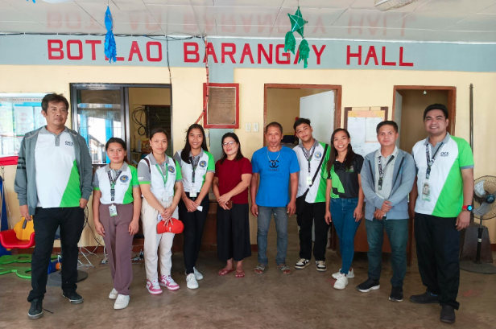
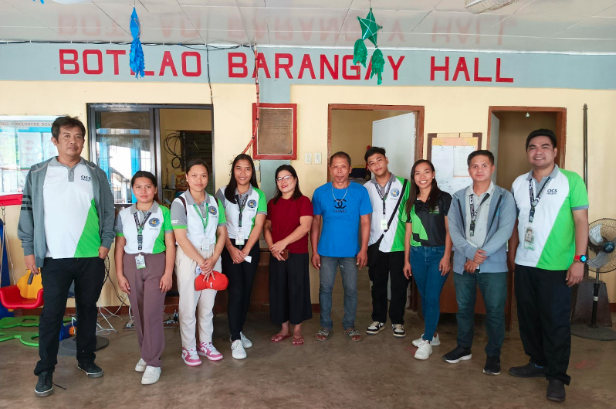

Photo information here | Need images for this article
Date here - Fisheries represent a crucial renewable resource, but effective management and conservation are essential to prevent depletion and ensure long-term sustainability. In Marinduque, coastal communities face declining fish catches, loss of mangrove habitats, and increasing impacts from environmental changes and human activities.
To address these issues, the SISE Project (Sustainable Initiatives for Coastal Ecosystems) was launched with an integrative approach that combines environmental conservation, community capacity-building, and sustainable livelihood development. This initiative supports ecological stability, local economic growth, and poverty alleviation through sustainable practices in coastal communities of Marinduque.
The SISE Project aims to enhance the resilience and sustainability of Marinduque's coastal ecosystems by:
- Supporting Environmental and Economic Sustainability: Establishing and maintaining coastal resources that support biodiversity, provide essential ecosystem services, and sustain local economies.
- Promoting Community Self-Reliance: Building the capacity of local fisherfolk and farmers to create sustainable livelihoods while protecting limited natural resources.
- Expanding Ecotourism and Conservation Efforts: Increasing awareness and engagement in biodiversity protection and sustainable tourism that highlights the unique coastal resources of Marinduque.
- Protecting and Enhancing Biodiversity: Conserving natural habitats, particularly mangrove areas, to foster carbon sequestration, protect against coastal erosion, and mitigate the impacts of climate change.
Located on a 1.2-hectare site in Barangay Ino-Capayang and Sitio Ubog-Ubog, Nangka II in Mogpog, the project consists of multiple components designed to provide short-term and long-term benefits:
- Mangrove and Aquasilviculture Site Development: The project established a mangrove seedling nursery, which has been instrumental in replanting and restoring local mangrove areas. This step not only enhances the habitat for fish and other marine species but also helps protect the coast from erosion and storm surges.
- Capacity-Building and Outreach: Community training sessions for local residents, People’s Organizations (POs), Local Government Units (LGUs), and non-governmental organizations (NGOs) have increased awareness of mangrove conservation and sustainable aquasilviculture. Environmental advocacy materials were distributed, and outreach activities helped spread awareness of the importance of mangrove conservation.
- Livelihood Technology and Field Guide Development: By establishing livelihood opportunities centered on aquasilviculture, the project has allowed local residents to improve their income through sustainable practices. Additionally, a field guide and laboratory manuals were developed to support ongoing research and conservation efforts, which serves as a valuable resource for both the College of Environmental Studies faculty and students.
Since its launch, the SISE Project has delivered significant ecological and socio-economic benefits:
- Enhanced Local Livelihoods: Through sustainable aquasilviculture practices, the project has generated additional income opportunities for fisherfolk and farmers, providing a more stable food supply and increased economic resilience.
- Biodiversity Conservation and Climate Mitigation: By restoring mangrove ecosystems, the project has helped enhance carbon sequestration, which contributes to climate change mitigation. Mangroves also provide a natural barrier against coastal erosion and reduce the impact of natural hazards like storm surges.
- Increased Community Awareness and Engagement: With training and advocacy efforts, the community has grown more knowledgeable about the ecological and economic importance of mangroves. Local stakeholders now play an active role in preserving their coastal resources.
- Research and Educational Resources: The SISE Project has established a foundation for ongoing research, particularly in studying heavy metal accumulation in mangroves, fish, water, and sediments, providing valuable insights for future conservation work.
Unlike traditional conservation initiatives, the SISE Project prioritizes active community involvement and capacity-building. It combines sustainable livelihoods with conservation practices, ensuring that local residents benefit both economically and ecologically. By integrating technical training, resource management, and ecotourism, the project fosters a collaborative approach to environmental stewardship.
The SISE Project is a model of sustainable development in Marinduque, empowering coastal communities to protect and benefit from their natural resources. By focusing on environmental protection, sustainable livelihoods, and community education, this initiative is helping build a resilient, sustainable future for Marinduque’s coastal communities—creating a legacy of responsible resource management for generations to come.